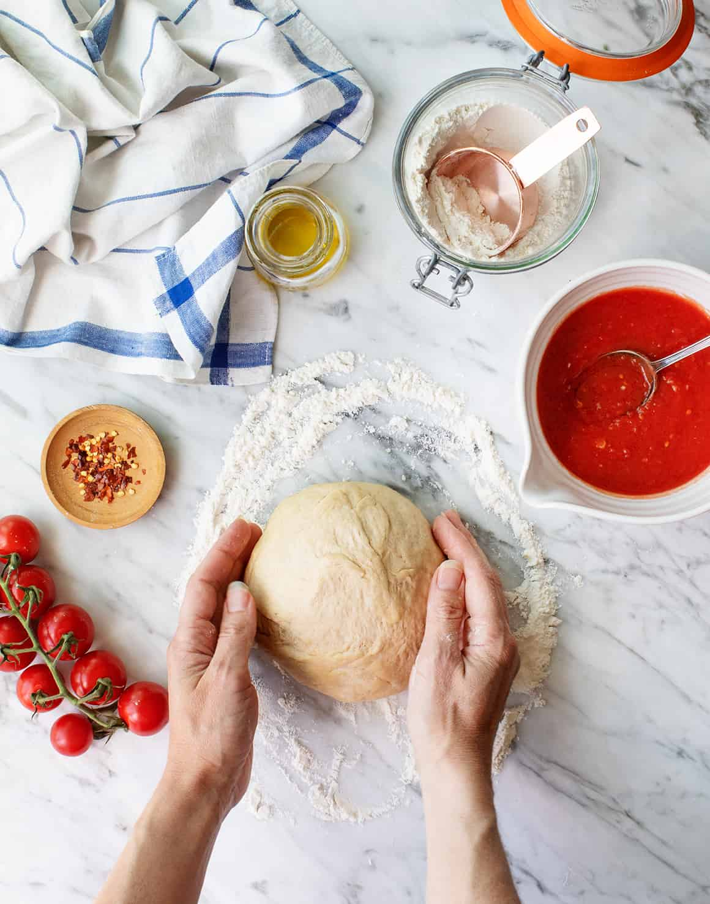

Home-made Pizza
This is the perfect home made pizza. It has simple ingredients and is quick and easy. It takes only twelve minutes to bake. It is the best quick dinner while still being tasty
Ingredients:
- Pizza Dough
- 1/2 Cup Pizza Sauce
- 8 Ounces Fresh Mozzarella, Sliced
- 1/2 Cup Sliced Cherry Tomatoes
- Fresh Basil Leaves
- Red Pepper Flakes
- Olive Oil

Steps:
- Preheat the oven to 500 Degrees Farhenheit
- Roll your pizza dough into a circular shape
- Spread sauce across the top, but not to the edges
- Top with the fresh mozzarella and cherry tomatoes
- Once the oven is preheated, put the pizza in the oven for 10-12 minutes, or until the crust is brown
- Remove from oven and top with basil leaves, red pepper flakes, and a drizzle of olive oil